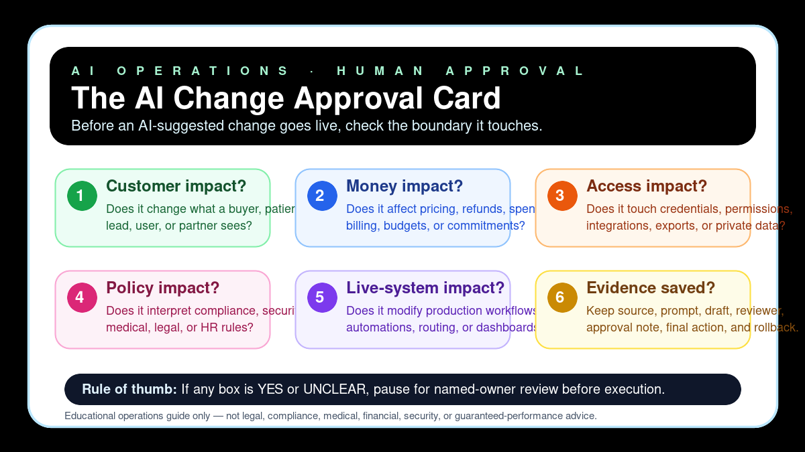

The AI Change Approval Card
A safe educational checklist for deciding when an AI-suggested change needs human approval before it affects customers, money, credentials, policy, or live systems.

Six approval checks
Customer impact?
Does it change what a buyer, patient, lead, user, or partner sees?
Money impact?
Does it affect pricing, refunds, spend, billing, budgets, or commitments?
Access impact?
Does it touch credentials, permissions, integrations, exports, or private data?
Policy impact?
Does it interpret compliance, security, medical, legal, or HR rules?
Live-system impact?
Does it modify production workflows, automations, routing, or dashboards?
Evidence saved?
Keep source, prompt, draft, reviewer, approval note, final action, and rollback.
Simple operating rule
If any box is YES or UNCLEAR, pause for named-owner review before execution.
Use the linked CSV as a lightweight approval log for sources, reviewers, final action, and rollback note.
Download
AI change approval card CSV template
Educational operations guide only — not legal, compliance, medical, financial, security, certification, revenue, savings, ranking, customer-result, decision-approval, or guaranteed-performance advice.